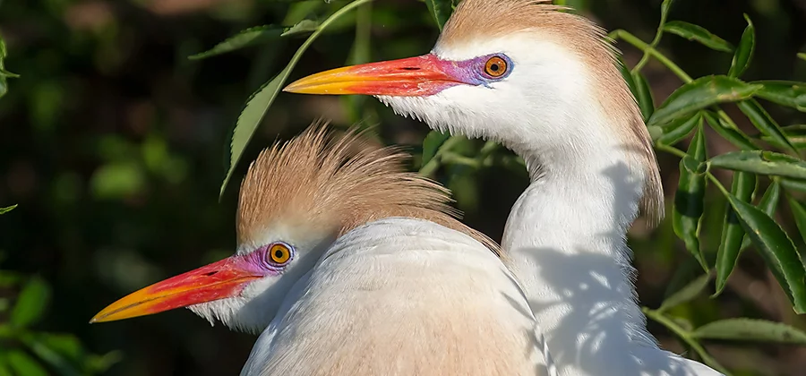

Bird Photography
Digital cameras have made great bird photos possible for everyone. Build your skills with
these bird
photography tips from expert wildlife photographers.

Photo by Joseph Filer
Learn to photograph living dinosaurs.
Early in the 20th century, birding (the practice of observing wild birds) grew in popularity. Early
cameras were slow and cumbersome, so good photos of live birds were harder to get than other nature
photography subjects. Most birders were just watchers of bird behavior. Even with the introduction of
autofocus in the 1980s, the cost of telephoto lenses and film made bird photography too expensive for
most budding nature photographers.
These days, most digital cameras have fast and accurate autofocus systems and shutter speeds of less
than a thousandth of a second. That speed, paired with the greater ISO capabilities, means more bird
photographers can capture sharp images of birds in motion. Add burst mode (taking several photos in
quick succession) and freedom from expensive film costs, and you can take hundreds of free photos in
your quest for that one perfect shot.
Equipment matters
It's possible to get quality shots of birds on any digital camera, but these are what professionals
recommend for the best results.
Cameras
Your camera body can be DSLR or mirrorless, but it must be able to achieve a shutter speed of 1/2000 of
a second or faster. At that speed, you might even be able to capture a hummingbird's wings without
motion blur.
Just as important is focus acquisition — the speed at which the motors in your camera and lens focus on
your subject. The faster you can take multiple pictures, the more likely you are to get one that
captures your subject the way you want. It helps to have a camera with a burst mode that can shoot six
to nine frames per second (FPS) and that has a big enough buffer to handle large bursts before the
camera has to pause shooting.
Lenses
Long lenses can be expensive and heavy, but in order to get crisp, close-up photos, you need a long
focal length. You can increase your focal length with a teleconverter, a secondary lens mounted between
the camera body and another lens.
For his bird photos, wildlife and landscape photographer Joseph Filer uses a DSLR camera with an 800mm
lens. Photographer Gerrit Vyn says you need both long focal length and close proximity to the bird. “To
get a full-frame hawk from 60 feet away, you need a 500mm lens and a 1.4x teleconverter,” Vyn notes. “To
get a warbler that's five or six inches long, you need to be 15 feet away from it.”
ISO
The ISO setting determines the amount of light your camera sensor takes in. For portraiture (photos of
birds standing still), you can use a lower ISO setting, like ISO 400, and slow down your shutter speed
to capture as much detail as possible. For birds in motion, you can go up to ISO 800 or more, high
enough to receive a lot of light in a tiny fraction of a second. “If I am waiting for behavior, I am at
a
higher ISO and faster shutter speed, prepared for that moment,” says Vyn.
Aperture
Aperture describes the opening in the lens that allows light to pass through to the camera's sensor,
measured in f-stops. (Remember, the lower the f-stop number, the larger the opening.) Aperture priority
mode is a camera setting (A or Av on the camera dial) that you can use to set the aperture manually, and
your camera will automatically select the optimal shutter speed to match it. If the camera senses too
much light, it will increase the shutter speed.
Tripod
If you want photographs of birds perched, sitting in nests, or standing in water, you can get better
photos with a tripod. The extra steadiness allows you to slow the shutter speed and increase depth of
field. “It's more fun not to use the tripod and move around,” Filer says, “but if it's a portrait you
want, then it makes sense.”
If you want to capture flying birds or birds moving quickly on the ground, camera stabilization is key,
but a tripod may be too unwieldy. With a lighter 200-500mm telephoto zoom lens and a fast shutter speed,
you may be able to get good photos without the tripod.
Tips from the field.
For the best image quality, consider the following advice before you dive into a bird photoshoot.
-
Plan ahead.
Whether common birds or rare species are your goal, research the birds you hope to photograph. You
can
find
affordable field guides that will tell you where to find the birds and when they’re most colorful
for
mating
season. Then scout your location. “I haven’t had many trips where I was shooting landscapes and then
said, ‘Oh,
there’s an animal, I’ll go shoot it,’” says Filer. “It just doesn’t work that way. You have to
target.”
Filer recommends starting at beaches or wildlife refuges or taking a photography workshop that has
photography
blinds set up for you. Blinds are tents or more permanent structures that shield the photographer
from
the
animal’s view.
-
Adapt to the bird’s habitat.
How you set up depends on the birds you want to shoot and how tolerant they are of human proximity.
“If
you want
to photograph a marsh wren, you can sit in the cattails, and they’ll eventually perch somewhere
close to
you,”
Vyn says.
For backyard birds, you might set up bird feeders near some natural perches and wait in a blind for
the
birds to
perch. For ducks, you can sit at the edge of a pond in a blind or other form of camouflage, and then
wait. “It
all depends on the habitat, species, and time of year, so the comprehensive knowledge of bird life
exponentially
improves your ability to find birds, get close, and get the images you’re imagining,” Vyn says.
-
Go early or late.
Don’t shoot in the middle of the day. “You’ve got to be out there early morning or late afternoon
with
those low
soft sun angles,” Filer says. If you try to photograph a white bird in the middle of the day, there
won’t be
enough contrast between the bird’s feathers and the sky.